卷壹 · 专线
物理级 IEPL 内网传输隧道
流量自国内三大运营商核心网入口进入山水云 BGP 汇聚集群后，直接通过深港、沪日与新欧物理内网光缆直达海外落地机房。全程绕开公网国际出口拥堵节点，晚高峰时段依然保持心电图般平稳的超低延迟。
摒弃拥堵公网的曲折绕行，山水云以东方匠心构筑深港、沪日及亚欧金融级 IEPL 物理内网专线。无论是在线审阅 8K 杜比视界母带、调用海外多模态 AI 算力集群，还是跨国协同办公，皆如清风过山岗般极速秒开、静水流深。

真正卓越的网络加速体验，源自底层物理光缆与动态路由算法的精妙协同。山水云不惜成本采购运营商级点对点专线，为您扫平跨境访问的每一处阻滞。
流量自国内三大运营商核心网入口进入山水云 BGP 汇聚集群后，直接通过深港、沪日与新欧物理内网光缆直达海外落地机房。全程绕开公网国际出口拥堵节点，晚高峰时段依然保持心电图般平稳的超低延迟。
自研「天演」毫秒级探针矩阵每 3 秒对全球 68 个云亭节点的负载、抖动与海底光缆健康度进行全量遥测。一旦检测到某条海缆施工或波动，系统将在 15 毫秒内无感切换至备用黄金链路，确保音视频通话与长连接不断流。
采用新一代 AEAD 256 位椭圆曲线加密与零信任抗量子握手协议，所有边缘转发节点均运行于纯 RAM 无盘内存系统之上。系统从架构底层杜绝任何访问记录、DNS 查询或流量特征的落盘存储，守护数字足迹的纯粹私密。
全面兼容 Clash Meta (Mihomo)、Shadowrocket、Surge、Stash、Sing-box、Quantumult X 与软路由 OpenWrt。内置精细化规则集与国内外智能分流策略，国内应用直连不降速，海外学术、流媒体与开发工具精准加速。
针对流媒体平台的严格风控与生成式 AI 模型的长会话高并发需求，山水云在全球核心城市部署了高纯净度原生住宅 ISP 与商宽落地池。
原生解锁 Netflix 非自制剧、Disney+、YouTube 8K 60fps、HBO Max、Hulu 及 Apple TV+。单节点峰值突发带宽可达 2.5Gbps，拖动进度条无需缓冲等待，让家庭影院尽享原盘级视听盛宴。
为 ChatGPT (GPT-4o / o3)、Claude 3.7 Sonnet、Gemini Advanced、Midjourney、Cursor 及 GitHub Copilot 配备专属高信誉度北美与东亚原生 IP 池。彻底告别账号降智、验证码频繁拦截及长文本 SSE 流式输出中断。
深度适配哔哩哔哩港澳台限定番剧、巴哈姆特动画疯、日本 AbemaTV、DMM、TVer、韩国 Wavve 以及 Spotify、TIDAL 高解析度无损曲库。内置 DNS 智能解析矩阵，无需繁琐切换即可跨区漫游。
针对 Figma 实时画布协作、Notion 知识库同步、Docker Hub / GitHub 镜像拉取、arXiv 学术检索以及 TradingView 实时毫秒级K线推送进行 TCP/UDP 双栈优化，大幅压缩握手往返时延。
全系席位均不限制峰值速率，无任何隐形倍率套路。支持按月、按季与按年灵活订阅，并提供新用户无忧体验保障。
适合日常网页查阅、学术文献检索与轻度流媒体观影
适合 4K/8K 重度影音爱好者、AI 高频开发者与远程办公
适合创意工作室、跨国科研团队与多模态算力重度用户
| 技术指标与服务权益 | 听松 · 轻享席 | 观澜 · 旗舰席 | 凌云 · 尊享席 |
|---|---|---|---|
| 月度高速流量配额 | 180 GB / 月 | 450 GB / 月 | 1024 GB / 月 |
| 传输链路架构 | BGP 专线 + 核心 IEPL | 100% 全线 IEPL 物理内网专线 | 100% 独享低复用 IEPL 旗舰专线 |
| 节点端口峰值速率 | 最高 1000 Mbps | 最高 2500 Mbps | 最高 5000 Mbps 无上限突发 |
| 流媒体与 AI 算力支持 | 4K 流媒体 / 基础 AI 解锁 | 8K 杜比视界 / 全平台 AI 原生直连 | 8K 母带级传输 / 独立纯净家宽 IP 池 |
| 同时在线终端数量 | 3 台设备 | 6 台设备（支持路由器） | 12 台设备（支持工作室网关） |
| 立即开通通道 | 立即订阅 | 立即订阅 | 立即订阅 |
为您解答关于山水云专线架构、客户端配置以及流媒体与 AI 解锁机制的核心疑问。
普通中转节点依然需要经过拥堵的国际公网出口，在晚间 20:00 至 23:00 极易发生丢包与高延迟波动。而山水云采用的 IEPL（国际以太网专线）属于运营商级物理内网点对点光纤通道，流量从深港、沪日内网直接过境，不受公网出口拥塞影响，全天候维持超低时延。
大模型服务商会对数据中心机房 IP 段进行严格评分，污染严重的共享 IP 会触发风控拦截甚至强制降级模型推理能力。山水云在北美、日本与新加坡专门采购了低复用率的原生家庭宽带（Residential ISP）与高信誉商宽 IP，并在路由层自动将 AI 流量分流至专属纯净出口。
注册进入山水云控制台后，无需手动填写复杂的服务器参数。您只需点击「一键导入 Clash / Shadowrocket / Sing-box」，系统会自动拉取包含智能分流规则的加密订阅配置，30 秒内即可在 Windows、macOS、iOS 与 Android 设备上开启丝滑加速。
山水云用户面板支持随时一键重置当月流量包，或按差价无缝升级至「观澜旗舰席」与「凌云尊享席」。同时我们还提供不限有效期的按量付费流量包方案，满足不同频次用户的使用习惯。
来自独立算法工程师、后期调色师与跨国商务顾问的长期实测反馈。
“作为每天高强度调用 Claude 3.7 与 OpenAI API 的全栈工程师，过去最头疼的就是长上下文流式输出到一半突然断连。换用山水云的观澜旗舰席后，硅谷与东京 IEPL 专线稳如磐石，连续半年没有出现过一次异常中断。”
“家里客厅配了 Apple TV 4K 和杜比全景声回音壁，对网络抖动极其敏感。山水云在香港和新加坡的原生解锁节点表现太惊艳了，晚高峰十点打开 Netflix 和 Disney+ 的 4K 杜比视界影片基本都是 1 秒即开，拖动进度条丝滑无比。”
“经常往返于长三角与欧洲出差，酒店和机场公共 Wi-Fi 的安全性一直让我担忧。山水云的无痕加密隧道不仅保障了公司跨国 ERP 与视频会议的安全，而且在移动端弱网环境下的抗丢包表现远超我之前用过的同类服务。”